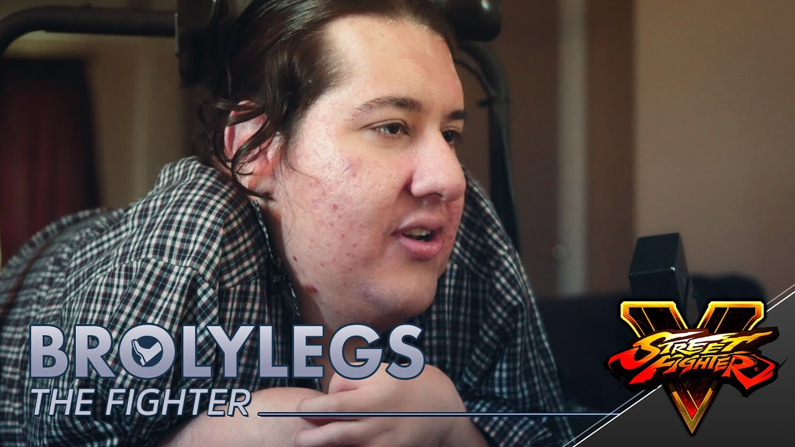

Dale Wilson fakes a legal proceeding against Chelka's Youtube Channel
LowTierGod claims to possess court documents with the intention of removing my Chelka's Youtube videos.
Dale Wilson doxes Rocks
LTG Rocks, a former moderator, chose to step away due to perceiving Dale's streams as becoming monotonous and diluted. In response, Dale resorted to doxing LTG Rocks on a livestream and publicly reprimanded him.
Dale Wilson fakes a legal proceeding against Sallow Dawn's Youtube channel
LowTierGod claims to possess court documents with the intention of removing Sallow Dawn's YouTube video. He informs YouTube that he intends to take legal action against me, but there are suspicions that these documents are not genuine.
LowTierGod claims to possess court documents with the intention of removing my YouTube video. This situation has been ongoing for two weeks. He is informing YouTube that he intends to take legal action against me, but there are suspicions that these documents are not genuine.
Capcom bans CeroBlast, Low Tier God from all events
Capcom ban statement
Capcom has been made aware of a situation where Dalauan “LowTierGod” Sparrow and Christina “CeroBlast” Tran have made offensive statements online,” Capcom said. “This is a clear violation of Capcom’s player code of conduct, so we have concluded that we have no choice but to ban LowTierGod and CeroBlast from all Capcom-owned and/or operated events, including Capcom Pro Tour and Street Fighter League until further notice.”
Dale Insults Handicapped Player BrolyLegs Losing To Him Online.

One of LowTierGod's most notorious moments occurred when he was defeated by Broly Legs in a ranked match. Following his loss, he proceeded to insult Broly Legs.


 Capcom ban statement
Capcom ban statement